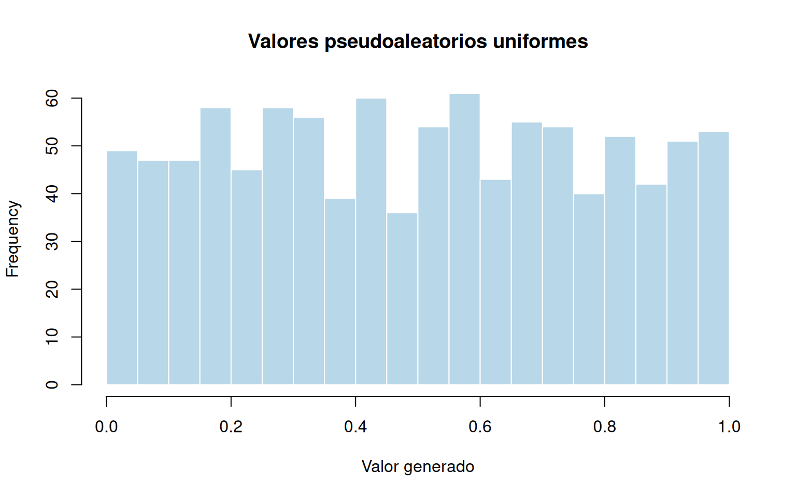
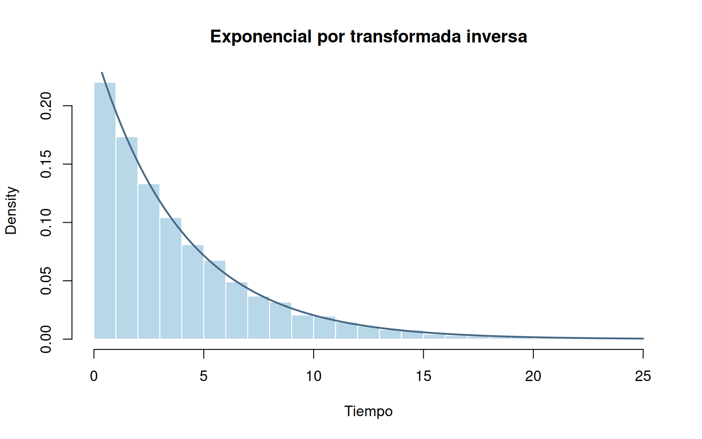
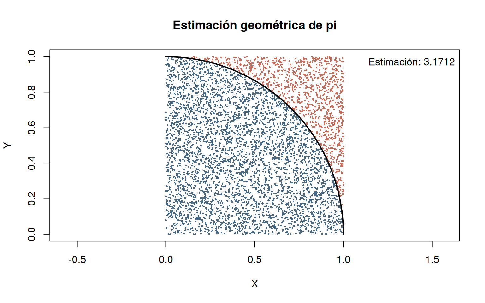
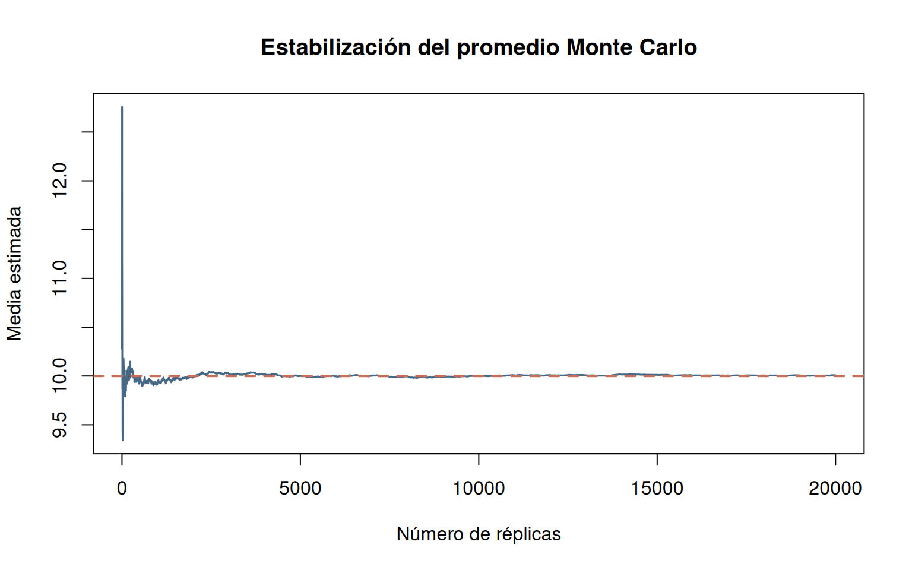

El método de Monte Carlo permite responder preguntas cuantitativas cuando intervienen fenómenos aleatorios. En lugar de observar una sola realización de un proceso, se generan numerosas realizaciones bajo un modelo probabilístico y se resumen sus resultados. El propósito de este recurso es comprender, ejecutar e interpretar ese procedimiento mediante experimentos reproducibles en R.
Resultados de aprendizaje. Al terminar el recurso, el estudiante podrá identificar las entradas aleatorias de un problema, construir réplicas de una variable de interés, estimar probabilidades y valores esperados, examinar la precisión de las estimaciones e interpretar sus implicaciones para una decisión.
Ruta de lectura. Primero se presentan los fundamentos; después, los experimentos elementales; finalmente, seis aplicaciones de ingeniería y administración. Los ejemplos son autocontenidos y utilizan funciones de R base.
Monte Carlo es una familia de procedimientos numéricos basados en la generación repetida de resultados aleatorios. Su desarrollo moderno está asociado con Stanislaw Ulam y John von Neumann, a mediados del siglo XX. El método no es una distribución de probabilidad: es una forma de utilizar modelos probabilísticos para aproximar cantidades de interés.
Una simulación determinista produce el mismo resultado cuando se mantienen fijas las entradas. Una simulación estocástica incorpora variables aleatorias; por ello, sus resultados pueden variar de una réplica a otra.
En un estudio de inventarios, por ejemplo, la demanda del próximo día es desconocida. Si se adopta una distribución para representarla, es posible generar miles de demandas hipotéticas y calcular qué proporción excede las existencias. Esa proporción constituye una estimación de la probabilidad de faltante bajo los supuestos del modelo.
Sea \(\mathbf U=(U_1,\ldots,U_k)\) el vector de entradas aleatorias y \(Y=g(\mathbf U)\) la salida de interés. A partir de \(n\) réplicas independientes \(Y_1,\ldots,Y_n\), la media se estima mediante
\[\widehat\mu_n=\frac{1}{n}\sum_{i=1}^{n}Y_i.\]
Si interesa un evento \(A\), se define \(I_i=1\) cuando ocurre en la réplica \(i\) y \(I_i=0\) en caso contrario. Entonces,
\[\widehat P(A)=\frac{1}{n}\sum_{i=1}^{n}I_i.\]
En consecuencia, estimar una probabilidad consiste en calcular la proporción de réplicas que cumplen una condición.
Si las réplicas son independientes, tienen la misma distribución y \(E(|Y|)<\infty\), su promedio converge en probabilidad al valor esperado. Por esta razón, al aumentar el número de réplicas las estimaciones tienden a estabilizarse. Esto no significa que cada nueva réplica reduzca el error observado: la trayectoria puede subir y bajar antes de estabilizarse.
El promedio simulado es aleatorio. Si la desviación estándar de \(Y\) es \(\sigma\), el error estándar del promedio es \(\sigma/\sqrt n\). Como normalmente \(\sigma\) es desconocida, se utiliza
\[\widehat{SE}(\widehat\mu)=\frac{s_Y}{\sqrt n}.\]
Bajo condiciones apropiadas para aplicar el teorema central del límite, un intervalo aproximado del 95% para la media es
\[\widehat\mu\pm1.96\frac{s_Y}{\sqrt n}.\]
Para una probabilidad estimada \(\widehat p\),
\[\widehat{SE}(\widehat p)=\sqrt{\frac{\widehat p(1-\widehat p)}{n}}.\]
Este último intervalo normal puede ser poco adecuado cuando la probabilidad está cerca de 0 o 1, o el número de éxitos es muy pequeño.
Regla práctica: para reducir a la mitad el error estándar es necesario multiplicar aproximadamente por cuatro el número de réplicas, manteniendo el mismo modelo.
El error de Monte Carlo se debe al número finito de réplicas. El error de modelo aparece cuando los supuestos, parámetros o relaciones del modelo no representan adecuadamente el fenómeno real. Aumentar \(n\) disminuye el primero, pero no corrige el segundo.
Los computadores generan secuencias pseudoaleatorias mediante
algoritmos. En R, runif() permite obtener valores uniformes
y set.seed() fija el estado inicial del generador para
reproducir resultados en un entorno compatible.
set.seed(4101)
u <- runif(1000)
hist(u, breaks = 20, col = "#B8D7E8", border = "white",
main = "Valores pseudoaleatorios uniformes", xlab = "Valor generado")
summary(u)## Min. 1st Qu. Median Mean 3rd Qu. Max.
## 0.000129 0.255235 0.504052 0.498324 0.738625 0.999098El histograma no tiene por qué presentar barras exactamente iguales: incluso con un generador correcto, el número de observaciones en cada intervalo fluctúa.
| Distribución | Función | Parámetros principales |
|---|---|---|
| Bernoulli | rbinom(n, 1, p) |
Probabilidad de éxito |
| Binomial | rbinom(n, size, prob) |
Ensayos y probabilidad |
| Poisson | rpois(n, lambda) |
Media del conteo |
| Uniforme | runif(n, min, max) |
Límites del intervalo |
| Normal | rnorm(n, mean, sd) |
Media y desviación estándar |
| Exponencial | rexp(n, rate) |
Tasa |
| Lognormal | rlnorm(n, meanlog, sdlog) |
Parámetros del logaritmo |
| Gamma | rgamma(n, shape, rate) |
Forma y tasa |
| Weibull | rweibull(n, shape, scale) |
Forma y escala |
| Beta | rbeta(n, shape1, shape2) |
Dos parámetros de forma |
El argumento n indica cuántos valores se generan.
Atención: rate y scale tienen
significados distintos. En una exponencial con tasa \(\lambda\), la media es \(1/\lambda\).
Si \(U\sim U(0,1)\) y \(F\) es una función de distribución, entonces \(X=F^{-1}(U)\), usando la inversa generalizada, tiene distribución \(F\). Para una exponencial de tasa \(\lambda>0\),
\[F(x)=1-e^{-\lambda x},\quad x\geq0,\]
por lo que
\[X=-\frac{\ln(1-U)}{\lambda}.\]
set.seed(4104)
lambda <- 0.25
u <- runif(10000)
x_inversa <- -log1p(-u) / lambda
x_r <- rexp(10000, rate = lambda)
hist(x_inversa, probability = TRUE, breaks = 40,
col = "#B8D7E8", border = "white", xlim = c(0, 25),
main = "Exponencial por transformada inversa", xlab = "Tiempo")
curve(dexp(x, rate = lambda), add = TRUE, col = "#476885", lwd = 2)
c(media_inversa = mean(x_inversa),
media_generador_R = mean(x_r), media_teorica = 1/lambda)## media_inversa media_generador_R media_teorica
## 3.979 3.973 4.000Las dos medias simuladas pueden diferir entre sí y del valor teórico; se trata de muestras independientes con variación aleatoria.
Pregunta. ¿Puede estimarse el número \(\pi\) utilizando puntos aleatorios en un cuadrado?
Sean \(X,Y\) independientes y uniformes en \((0,1)\). El área del cuarto de círculo unitario es \(\pi/4\) y la del cuadrado es 1. Por tanto,
\[P(X^2+Y^2\leq1)=\frac{\pi}{4},\qquad \widehat\pi=4\frac{\#\{i:X_i^2+Y_i^2\leq1\}}{n}.\]
set.seed(4102)
n <- 5000
x <- runif(n)
y <- runif(n)
dentro <- x^2 + y^2 <= 1
pi_est <- 4 * mean(dentro)
plot(x, y, pch = 16, cex = 0.35,
col = ifelse(dentro, "#476885", "#C76D59"),
asp = 1, xlab = "X", ylab = "Y",
main = "Estimación geométrica de pi")
t <- seq(0, pi/2, length.out = 250)
lines(cos(t), sin(t), lwd = 2)
legend("topright", legend = paste("Estimación:", round(pi_est, 5)), bty = "n")
c(estimacion = pi_est, valor_referencia = pi, error_absoluto = abs(pi_est-pi))## estimacion valor_referencia error_absoluto
## 3.17120 3.14159 0.02961Lectura del resultado. Los puntos interiores representan éxitos. Su proporción, multiplicada por cuatro, aproxima \(\pi\). La diferencia con el valor conocido es un error de simulación, no evidencia de que el procedimiento geométrico sea incorrecto.
Pregunta. Al lanzar dos dados equilibrados e independientes, ¿cuál es la probabilidad de obtener una suma de al menos 10?
Los pares favorables son \((4,6)\), \((5,5)\), \((6,4)\), \((5,6)\), \((6,5)\) y \((6,6)\): seis de 36 resultados equiprobables. Así, \(P(D_1+D_2\geq10)=1/6\).
set.seed(4103)
n <- 10000
d1 <- sample(1:6, n, replace = TRUE)
d2 <- sample(1:6, n, replace = TRUE)
suma <- d1 + d2
c(probabilidad_simulada = mean(suma >= 10),
probabilidad_teorica = 1/6)## probabilidad_simulada probabilidad_teorica
## 0.1666 0.1667Interpretación. La comparación con \(1/6\) permite verificar que la simulación reproduce razonablemente el comportamiento esperado. No debe exigirse coincidencia exacta.
Para \(U\sim U(0,1)\), se cumple \(E[h(U)]=\int_0^1h(x)\,dx\) cuando la integral existe. Por ejemplo,
\[\int_0^1x^2\,dx=\frac13.\]
set.seed(4105)
u <- runif(20000)
y <- u^2
estimacion <- mean(y)
se <- sd(y) / sqrt(length(y))
c(estimacion = estimacion, valor_teorico = 1/3,
error_estandar = se,
limite_inferior = estimacion - 1.96*se,
limite_superior = estimacion + 1.96*se)## estimacion valor_teorico error_estandar limite_inferior limite_superior
## 0.335142 0.333333 0.002103 0.331020 0.339264Interpretación. La integral se transforma en el promedio de una variable aleatoria. El intervalo cuantifica la incertidumbre debida al número finito de valores simulados, no una incertidumbre sobre el valor matemático exacto de la integral.
El siguiente experimento estima repetidamente la media de una normal con media 10 y desviación estándar 3. En cada punto se representa el promedio de todas las observaciones generadas hasta ese momento.
set.seed(4106)
z <- rnorm(20000, mean = 10, sd = 3)
promedio_acumulado <- cumsum(z) / seq_along(z)
plot(promedio_acumulado, type = "l", col = "#476885", lwd = 1.5,
xlab = "Número de réplicas", ylab = "Media estimada",
main = "Estabilización del promedio Monte Carlo")
abline(h = 10, col = "#C76D59", lty = 2, lwd = 2)
La línea horizontal indica el valor esperado del modelo. Las oscilaciones suelen ser más grandes al comienzo y se atenúan conforme aumenta el número de observaciones. El gráfico permite estudiar visualmente la estabilización, pero no sustituye el cálculo del error estándar.
Los siguientes casos comparten una misma estructura: contexto, pregunta, modelo, indicador, simulación e interpretación. Los parámetros se adoptan como supuestos didácticos y no corresponden a estimaciones empíricas de una empresa real.
Contexto. Una línea de producción fabrica lotes de 50 artículos. Cada artículo tiene probabilidad 0.04 de resultar defectuoso, independientemente de los demás. Se considera crítico encontrar al menos cuatro defectuosos en un lote.
Pregunta y modelo. Si \(D\sim\mathrm{Binomial}(50,0.04)\), el indicador es \(I(D\geq4)\). El valor teórico de referencia es \(1-P(D\leq3)\).
Procedimiento en R. Se generan realizaciones del fenómeno y se calculan los indicadores mediante promedios, proporciones o cuantiles.
set.seed(4111)
d <- rbinom(10000, size = 50, prob = 0.04)
c(MonteCarlo = mean(d >= 4), teorico = 1-pbinom(3, 50, 0.04))## MonteCarlo teorico
## 0.1396 0.1391Interpretación. Cada valor simulado de
d es el número de defectuosos de un lote
completo. mean(d >= 4) representa la proporción
de lotes críticos. La estimación puede utilizarse para dimensionar
inspecciones, siempre que el supuesto de independencia sea
defendible.
Para analizar. ¿Qué supuesto del modelo sería más importante contrastar con datos observados antes de utilizar estos resultados en una decisión?
Contexto. Un almacén dispone de 22 unidades para atender la demanda diaria. Se supone que el número de unidades solicitadas durante un día sigue una Poisson de media 18.
Pregunta y modelo. Sea \(D\sim\mathrm{Poisson}(18)\) y \(S=22\). Se estudian \(P(D>S)\), \(E[\max(D-S,0)]\) y \(E[\min(D,S)]\).
Procedimiento en R. Se generan realizaciones del fenómeno y se calculan los indicadores mediante promedios, proporciones o cuantiles.
set.seed(4112)
d <- rpois(10000, lambda = 18)
s <- 22
c(prob_faltante = mean(d > s), faltante_medio = mean(pmax(d-s, 0)),
ventas_medias = mean(pmin(d,s)))## prob_faltante faltante_medio ventas_medias
## 0.1450 0.4199 17.5884Interpretación. La probabilidad de faltante mide la frecuencia esperada de días sin inventario suficiente; el faltante medio mide cuántas unidades dejan de atenderse por día, en promedio; las ventas medias no pueden superar las 22 unidades disponibles. Estos indicadores responden preguntas distintas.
Para analizar. ¿Qué supuesto del modelo sería más importante contrastar con datos observados antes de utilizar estos resultados en una decisión?
Contexto. El tiempo hasta la falla de un componente se representa mediante una Weibull con parámetro de forma 2 y escala 1500 horas. Se desea estimar la probabilidad de funcionamiento después de 1200 horas.
Pregunta y modelo. Si \(T\sim\mathrm{Weibull}(2,1500)\), la confiabilidad a las \(t\) horas es \(P(T>t)=\exp[-(t/1500)^2]\).
Procedimiento en R. Se generan realizaciones del fenómeno y se calculan los indicadores mediante promedios, proporciones o cuantiles.
set.seed(4113)
t <- rweibull(20000, shape = 2, scale = 1500)
c(MonteCarlo = mean(t > 1200), teorico = exp(-(1200/1500)^2))## MonteCarlo teorico
## 0.5233 0.5273Interpretación. Cada observación simulada representa la vida útil de un componente diferente. La proporción de tiempos superiores a 1200 horas estima la confiabilidad en ese horizonte. La comparación con la fórmula permite comprobar el procedimiento.
Para analizar. ¿Qué supuesto del modelo sería más importante contrastar con datos observados antes de utilizar estos resultados en una decisión?
Contexto. En un punto de servicio, la duración de una atención individual se modela con una exponencial de media 6 minutos. Interesa la proporción de servicios que exceden 10 minutos y el percentil 90.
Pregunta y modelo. Si \(S\sim\mathrm{Exponencial}(\lambda=1/6)\), se estiman \(P(S>10)\) y el cuantil de orden 0.90.
Procedimiento en R. Se generan realizaciones del fenómeno y se calculan los indicadores mediante promedios, proporciones o cuantiles.
set.seed(4114)
s <- rexp(10000, rate = 1/6)
c(prob_mas_10 = mean(s > 10), percentil90 = unname(quantile(s, 0.9)),
prob_teorica = pexp(10, rate = 1/6, lower.tail = FALSE))## prob_mas_10 percentil90 prob_teorica
## 0.1835 13.9535 0.1889Interpretación. La probabilidad de superar 10 minutos es un indicador de servicios prolongados. El percentil 90 es un umbral tal que aproximadamente el 90% de los servicios dura menos que él. No se está estimando el tiempo de espera en una fila.
Para analizar. ¿Qué supuesto del modelo sería más importante contrastar con datos observados antes de utilizar estos resultados en una decisión?
Contexto. La pérdida monetaria asociada con un
evento se representa mediante una lognormal con meanlog = 2
y sdlog = 0.5. Las pérdidas se expresan en millones de
unidades monetarias.
Pregunta y modelo. Si \(L\sim\mathrm{Lognormal}(2,0.5)\), se estiman \(E(L)\), \(P(L>15)\) y el percentil 95 de \(L\).
Procedimiento en R. Se generan realizaciones del fenómeno y se calculan los indicadores mediante promedios, proporciones o cuantiles.
set.seed(4115)
l <- rlnorm(20000, meanlog = 2, sdlog = 0.5)
c(perdida_media = mean(l), prob_superar_15 = mean(l > 15),
cuantil95 = unname(quantile(l, 0.95)))## perdida_media prob_superar_15 cuantil95
## 8.3854 0.0791 16.8100Interpretación. La pérdida media resume el costo esperado por evento; la probabilidad de superar 15 describe la frecuencia de pérdidas elevadas; el percentil 95 caracteriza un umbral de severidad. Son medidas complementarias y no deben confundirse.
Para analizar. ¿Qué supuesto del modelo sería más importante contrastar con datos observados antes de utilizar estos resultados en una decisión?
Contexto. Se considera un sistema con un solo servidor y disciplina de atención por orden de llegada. Los intervalos entre llegadas son exponenciales de media 8 minutos y los tiempos de servicio son exponenciales de media 6 minutos. Se simulan 100 clientes.
Pregunta y modelo. Sean \(A_i\) la llegada del cliente \(i\), \(S_i\) su servicio, \(B_i\) el comienzo de la atención y \(C_i\) la salida. Se aplican \(B_i=\max(A_i,C_{i-1})\), \(C_i=B_i+S_i\) y \(W_i=B_i-A_i\), con \(C_0=0\).
Procedimiento en R. Se generan realizaciones del fenómeno y se calculan los indicadores mediante promedios, proporciones o cuantiles.
set.seed(4116)
n <- 100
llegadas <- cumsum(rexp(n, rate = 1/8))
servicios <- rexp(n, rate = 1/6)
inicio <- salida <- espera <- numeric(n)
for (i in seq_len(n)) {
previo <- if (i == 1) 0 else salida[i-1]
inicio[i] <- max(llegadas[i], previo)
salida[i] <- inicio[i] + servicios[i]
espera[i] <- inicio[i] - llegadas[i]
}
c(espera_media = mean(espera), prob_esperar = mean(espera > 0),
espera_maxima = max(espera))## espera_media prob_esperar espera_maxima
## 23.82 0.81 96.76Interpretación. El inicio de atención depende de la llegada del cliente y de la salida del anterior. Por eso se necesita una recursión cronológica: simular tiempos de servicio sin relacionarlos con las llegadas no reproduce una cola. Los indicadores calculados describen una jornada simulada; para estimar la incertidumbre entre jornadas se deben simular jornadas completas repetidas.
Para analizar. ¿Qué supuesto del modelo sería más importante contrastar con datos observados antes de utilizar estos resultados en una decisión?
En los primeros casos, una réplica puede corresponder a un lote, un día de demanda o la vida de un componente. En el caso de la cola, una réplica puede abarcar una secuencia completa de clientes: el resultado de un cliente depende de lo ocurrido con los anteriores. Por eso, el diseño de la réplica debe respetar la estructura temporal del sistema.
Un modelo de colas puede servir como prototipo de un sistema de atención real. Para aproximarse a un gemelo digital sería necesario identificar su contraparte física, incorporar datos observados, calibrar los parámetros, validar los indicadores y definir un mecanismo de actualización. Monte Carlo es una herramienta para estudiar incertidumbre; por sí solo no constituye un gemelo digital.
En cualquier informe de simulación conviene distinguir: (a) la pregunta y sus unidades, (b) la distribución y los parámetros asumidos, (c) la unidad que representa una réplica, (d) el número de réplicas, (e) el indicador estimado y su precisión, y (f) la conclusión condicionada al modelo. Si existe un valor teórico, debe compararse con el resultado simulado.
?set.seed,
?runif, ?rbinom, ?rpois,
?rweibull, ?rlnorm, ?rexp y
?quantile.Material didáctico de la Unidad 4.1. Los escenarios numéricos son ilustrativos y no reproducen ejercicios textuales de Navidi.